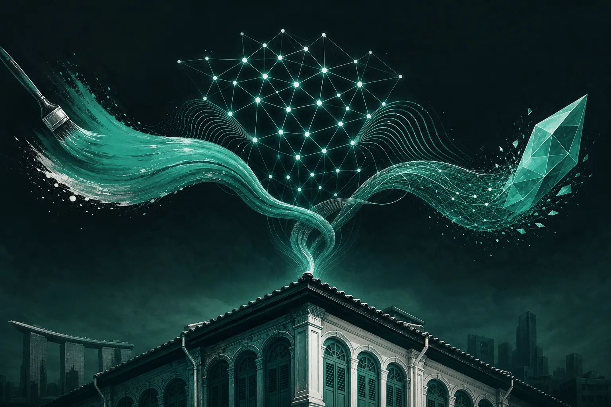

AI's role in creative, media and brand marketing

AI's role in marketing is different in each discipline. In creative, it widens the range of ideas but cannot judge which one is true to the brand. In media, it optimises faster than humans can. In brand, it is most dangerous, because it pulls every brand towards the same average. The human job is deciding where AI leads and where it follows.
On Monday 24 February 2025, at 5 PM, Marketing Mondays held an in-person session at Block71 Singapore on exactly this question: "AI's Role in Creative, Media, and Brand Marketing". Three speakers, one room of marketers, and a debate that has stayed with us. We returned to Block71 again on 25 August 2026, and the conversation had moved on, but the framework underneath held up. This piece sets it out.
Why split the question into creative, media and brand?
Because "AI in marketing" is too broad to be useful. When people say they are worried about AI, they usually mean one of three different things. A designer worries that image generation will make their craft cheap. A media buyer worries that automated bidding will make their role redundant. A brand lead worries that everything will start to sound the same. These are different problems with different answers.
Where does AI help most in creative?
AI is excellent at expanding the option space. Give it a brief and it will return more directions than a team could sketch in a week. That is useful, and it is also the trap. More options do not make a better decision. They make a harder one.
The creative skill that grows in value is selection: knowing which idea is true to an audience tension and which one is just plausible. That judgment depends on evidence about what real people care about. Our sister brand GPT3 Marketing has worked on this since the early days of generative AI, and its whole method is about grounding prompts and brand voice in what audiences actually respond to.
A simple creative rule
Let AI generate. Let evidence shortlist. Let humans choose. If any of those three steps is missing, quality drops.
Where does AI help most in media?
Media is where AI has the most mature track record. Bidding, budget pacing and audience expansion have been machine-led for years. The new frontier is earlier in the process: predicting which creative will earn attention before you spend on it.
SOMIN, the AI audience-research platform that founded Marketing Mondays, works on this pre-spend question. Its paid media intelligence scores creative clickability before budget is committed, so the media machine is optimising the right assets rather than efficiently scaling the wrong ones. The KPI Media case study shows how an agency put this into its own workflow.
Why is brand the riskiest place to use AI?
Large language models are trained to produce the most likely next word. In brand terms, that means the most average message. If every competitor uses the same tools with similar prompts, the category converges. Listening data shows marketers already feel this: a sea of sameness, where AI-generated content makes everyone sound alike and the instinct is to chase trends rather than build narrative.
The answer is not to avoid AI in brand work. It is to feed it something your competitors do not have: a specific, evidenced understanding of your audience's tensions, and a clear narrative you are willing to defend.
Framework: who leads, who follows?
- Creative: AI leads on generation, humans lead on selection and craft.
- Media: AI leads on optimisation, humans lead on what gets fed into it and on profit, not platform metrics.
- Brand: humans lead on narrative, AI follows as a tool for consistency and scale.
- Research: AI leads on reading volume, humans lead on interpreting what matters.
What did the room push back on?
We will not attribute quotes we did not record verbatim, but a few themes came up repeatedly from the floor.
"Who checks the AI?"
Several marketers worried about AI conclusions they could not verify. The fair response: only trust tools that let you trace a conclusion back to the real posts or data behind it. If you cannot check it, do not ship it.
"What happens to junior roles?"
The tasks that once trained juniors, such as resizing and first drafts, are the ones being automated. Teams need a deliberate way to teach judgment early, and peer communities are part of that answer.
"Is the brand still ours?"
Brand leads were clear that narrative ownership cannot be delegated. AI can help you say it many ways. It cannot decide what you stand for.
What should you do this Monday?
Pick one live project and label each step creative, media, brand or research. For each, write down who leads today, the human or the machine, and who should lead according to the framework above. Most teams find one step where AI is leading on something that needs judgment, usually brand tone, and one where humans are still doing work a machine could take, usually reporting. Swap those two and you have a practical first move.
Definitions
- Creative clickability: a prediction of how likely a creative is to earn engagement, made before media spend.
- Sea of sameness: a category where brands converge on similar messages, often accelerated by generic AI output.
- Audience tension: a recurring conflict or pain point that real people voice, which a brand can address.
What has changed since the first Block71 session?
By our August 2026 return, the conversation had shifted from "should we use AI" to "how do we organise around it". That is the question we are taking to the next session, on the shape of the 2027 marketing team. You can read our pre-read in the 2027 marketing team signal.
If you want to be in the room next time, the Marketing Mondays WhatsApp community, "Marketing Mondays @ Block71", is where session news lands first. Request an invite at ask@mondays.marketing.
Frequently asked questions
When was the Marketing Mondays Block71 panel on AI?
It took place on Monday 24 February 2025 at 5 PM at Block71 Singapore, with a three-speaker panel on AI's role in creative, media and brand marketing. A further Block71 session ran on 25 August 2026.
Should brands use AI for brand strategy?
Use AI to support consistency and scale, but keep narrative decisions human. AI trained on averages tends to pull brands towards sameness unless it is grounded in specific audience evidence.
Where does AI help most in media buying?
In optimisation and, increasingly, in predicting which creative will perform before money is spent, so automated systems scale the right assets.
Request an invite
Marketing Mondays is a Singapore community of marketers, founders and agency teams, plus a weekly YouTube show. Real competitor and audience signals, not opinions, and a room of peers to test them with.
Email ask@mondays.marketing →